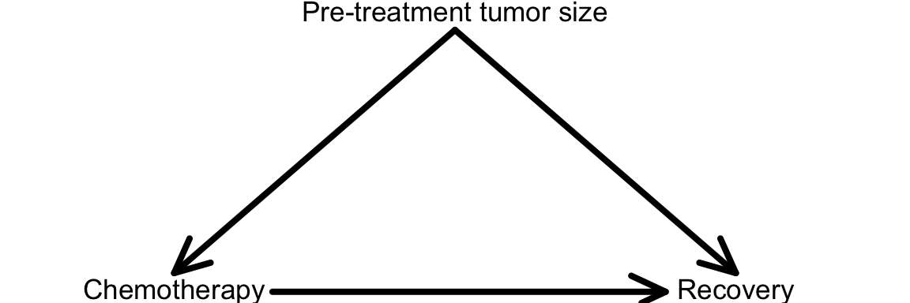

Topic 1 Introductions, Review, and Motivation
Slides from today are available here.
Learning Goals
- Understand the instances in which we care about causation more than association
- Review regression modeling and develop some ideas about its relation to causal inference goals
- Develop some ideas for why causal stories (i.e., expert knowledge) are crucial for causal inference goals
Review: Regression Models
Discuss the following questions with your group members.
- What does a linear regression model formula look like?
If you covered logistic regression in STAT 155, what does a logistic regression model formula look like? When would you use logistic vs. linear regression? - In general, how do we interpret the intercept in a regression model (both linear and logistic)?
- How do we interpret the other coefficients in a regression model (both linear and logistic)? How can we justify this interpretation mathematically?
- How might regression models be useful in understanding the causal effect of some variable on an outcome?
Exercises
You can download a template RMarkdown file to start from here.
We will look at (simulated) data from a study that looked at the effectiveness of chemotherapy for treating colon cancer. Chemotherapy is effectively a poison that kills cells in the body that are rapidly proliferating: these cells include the cancer cells (often in a mass called a tumor) but also cells in bone marrow involved in sustaining the immune system.
In this study, researchers measured the following variables:
pre_tumor_size: Tumor size before the chemotherapy/placebo treatment (SmallorLarge).treated:ChemoYesif the patient received chemotherapy orChemoNoif not.post_tumor_size: Tumor size 3 months after the chemotherapy/placebo treatment (SmallorLarge).recovery:Yesif the patient recovered from their cancer.Nootherwise.
You can read in the data as follows:
chemo_study_data <- read.csv("https://www.dropbox.com/s/vl06j75a8afw8ct/chemo_study.csv?dl=1")Exercise 1
The first step in any data analysis is to visualize your data. Let’s refamiliarize ourselves with the ggplot2 package in R. It may be helpful to have this ggplot2 cheat sheet open. Make sure to load the ggplot2 package by including library(ggplot2) at the top of your RMarkdown document.
- Look at the distribution of each of the 4 measured variables. What plot type is most appropriate for this type of variable?
ggplot(chemo_study_data, aes(x = pre_tumor_size)) + ???- Is pre-treatment tumor size predictive of whether or not a patient received chemotherapy? Make a plot to assess this, and briefly state what conclusions can be drawn from the plot. (Hint: it will be helpful to look at the second page of the cheat sheet in the section labeled “Position Adjustments”.)
ggplot(chemo_study_data, aes(x = pre_tumor_size, fill = treated)) + ???- Is pre-treatment tumor size predictive of whether or not a patient recovered? Make a plot, and briefly state your conclusions.
- A variable is a confounder if it is a common cause of both the treatment and outcome. This is shown in the diagram below. Given your results from parts b and c, could pre-treatment tumor size be a confounder of the relationship between chemotherapy treatment and recovery? If yes, what is the concern here?
Note: the causal relationships of interest so far can be depicted in a causal diagram, shown below. An arrow between two variables indicates that one is a cause of the other (an arrow points from a cause to its effect).

Exercise 2
One way to “adjust for” the influence of counfounders is to include them as predictors/explanatory variables in regression models.
We can model recovery using a logistic regression model (used when the outcome variable is binary). In R, we can fit a logistic regression model using code like the following:
# Fit the model and store it in the "mod" object
mod <- glm(outcome_variable ~ explanatory_variable1+explanatory_variable2,
family = "binomial", data = your_data)
# Display model output
summary(mod)- Fit a logistic regression model with only treatment as a predictor. Interpret the treatment coefficient. Is this the interpretation you expected?
- Fit a logistic regression model with both treatment and pre-treatment tumor size as predictors. Interpret the treatment coefficient. Is this the interpretation you expected?
Exercise 3
So far, we have not considered the post_tumor_size variable at all in our analyses.
- Let’s get some visual understanding of this variable. Make 2 plots: one showing its relationship with the
treatedvariable and the second showing its relationship with therecoveryvariable. - What is your intuition - should we include
post_tumor_sizeas an explanatory variable in our logistic regression model? Why or why not? - Fit the logistic regression model (
mod3) with all 3 explanatory variables, and interpret the treatment coefficient. How do the results compare tomod2? - The diagram that we considered at the end of Exercise 1 only included the treatment, recovery, and pre-treatment tumor size variables. Draw (on paper) an expanded causal diagram that includes post-treatment tumor size. In light of where post-treatment tumor size appears on your diagram, what does it mean to include it in the logistic regression model?
- The data in this investigation were simulated. That is, your instructor generated them, and thus, she actually knows the truth behind the data. The truth is that chemotherapy does have a true beneficial causal impact on recovery. Chemotherapy does increases the chance of recovery. Given this information and the insights you gained from these three exercises, try to put all of this information together. What makes sense? What remains unclear?